I’m very pleased to announce ggplot2 2.2.0. It includes four major new features:
- Subtitles and captions.
- A large rewrite of the faceting system.
- Improved theme options.
- Better stacking.
It also includes as numerous bug fixes and minor improvements, as described in the release notes.
The majority of this work was carried out by Thomas Pederson, who I was lucky to have as my “ggplot2 intern” this summer. Make sure to check out his other visualisation packages: ggraph, ggforce, and tweenr.
Install ggplot2 with:
Subtitles and captions
Thanks to Bob Rudis, you can now add subtitles and captions to your plots:
ggplot(mpg, aes(displ, hwy)) +
geom_point(aes(color = class)) +
geom_smooth(se = FALSE, method = "loess") +
labs(
title = "Fuel efficiency generally decreases with engine size",
subtitle = "Two seaters (sports cars) are an exception because of their light weight",
caption = "Data from fueleconomy.gov"
)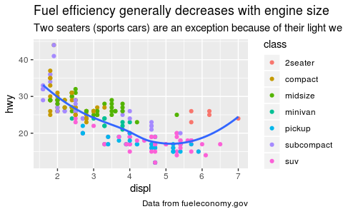
These are controlled by the theme settings plot.subtitle and plot.caption.
The plot title is now aligned to the left by default. To return to the previous centered alignment, use theme(plot.title = element_text(hjust = 0.5)).
Facets
The facet and layout implementation has been moved to ggproto and received a large rewrite and refactoring. This will allow others to create their own facetting systems, as described in the vignette("extending-ggplot2"). Along with the rewrite a number of features and improvements has been added, most notably:
-
You can now use functions in facetting formulas, thanks to Dan Ruderman.
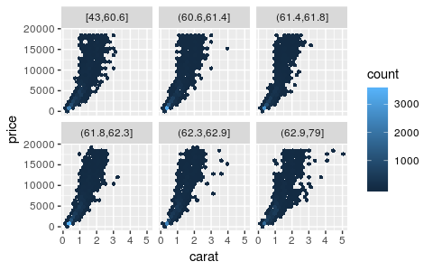
-
Axes are now drawn under the panels in
facet_wrap()when the rectangle is not completely filled.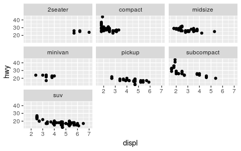
-
You can set the position of the axes with the
positionargument.ggplot(mpg, aes(displ, hwy)) + geom_point() + scale_x_continuous(position = "top") + scale_y_continuous(position = "right")
-
You can display a secondary axis that is a one-to-one transformation of the primary axis with
sec.axis.ggplot(mpg, aes(displ, hwy)) + geom_point() + scale_y_continuous( "mpg (US)", sec.axis = sec_axis(~ . * 1.20, name = "mpg (UK)") )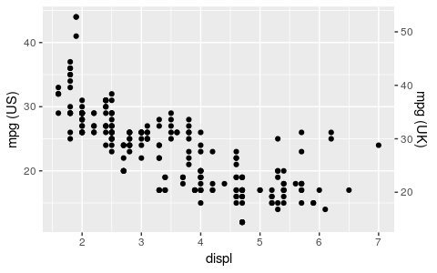
-
Strips can be placed on any side, and the placement with respect to axes can be controlled with the
strip.placementtheme option.ggplot(mpg, aes(displ, hwy)) + geom_point() + facet_wrap(~ drv, strip.position = "bottom") + theme( strip.placement = "outside", strip.background = element_blank(), strip.text = element_text(face = "bold") ) + xlab(NULL)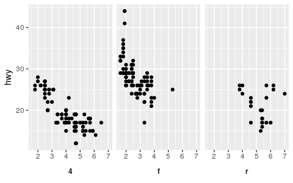
Theming
The
theme()function now has named arguments so autocomplete and documentation suggestions are vastly improved.Blank elements can now be overridden again so you get the expected behavior when setting e.g.
axis.line.x.-
element_line()gets anarrowargument that lets you put arrows on axes.arrow <- arrow(length = unit(0.4, "cm"), type = "closed") ggplot(mpg, aes(displ, hwy)) + geom_point() + theme_minimal() + theme( axis.line = element_line(arrow = arrow) )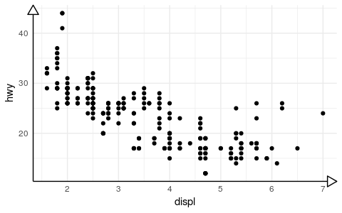
-
Control of legend styling has been improved. The whole legend area can be aligned with the plot area and a box can be drawn around all legends:
ggplot(mpg, aes(displ, hwy, shape = drv, colour = fl)) + geom_point() + theme( legend.justification = "top", legend.box = "horizontal", legend.box.margin = margin(3, 3, 3, 3, "mm"), legend.margin = margin(), legend.box.background = element_rect(colour = "grey50") )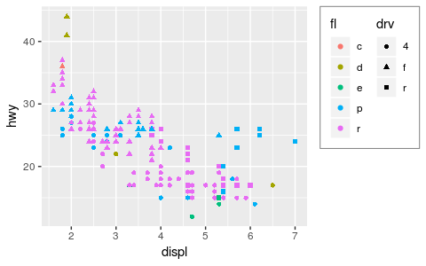
panel.marginandlegend.marginhave been renamed topanel.spacingandlegend.spacingrespectively, as this better indicates their roles. A newlegend.marginactually controls the margin around each legend.When computing the height of titles, ggplot2 now inclues the height of the descenders (i.e. the bits
gandythat hang underneath). This improves the margins around titles, particularly the y axis label. I have also very slightly increased the inner margins of axis titles, and removed the outer margins.The default themes has been tweaked by Jean-Olivier Irisson making them better match
theme_grey().
Stacking bars
position_stack() and position_fill() now stack values in the reverse order of the grouping, which makes the default stack order match the legend.
avg_price <- diamonds %>%
group_by(cut, color) %>%
summarise(price = mean(price)) %>%
ungroup() %>%
mutate(price_rel = price - mean(price))
ggplot(avg_price) +
geom_col(aes(x = cut, y = price, fill = color))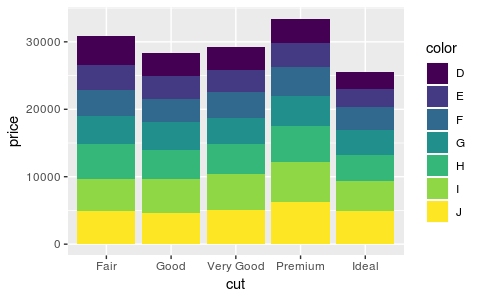
(Note also the new geom_col() which is short-hand for geom_bar(stat = "identity"), contributed by Bob Rudis.)
If you want to stack in the opposite order, try forcats::fct_rev():
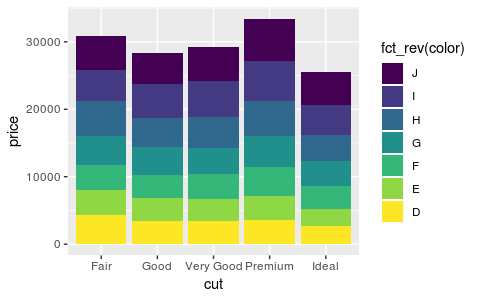
Additionally, you can now stack negative values:
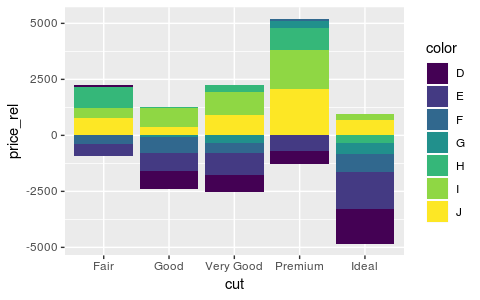
The overall ordering cannot necessarily be matched in the presence of negative values, but the ordering on either side of the x-axis will match.
Labels can also be stacked, but the default position is suboptimal:
series <- data.frame(
time = c(rep(1, 4),rep(2, 4), rep(3, 4), rep(4, 4)),
type = rep(c('a', 'b', 'c', 'd'), 4),
value = rpois(16, 10)
)
ggplot(series, aes(time, value, group = type)) +
geom_area(aes(fill = type)) +
geom_text(aes(label = type), position = "stack")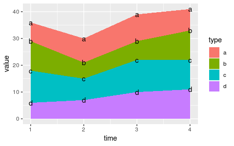
You can improve the position with the vjust parameter. A vjust of 0.5 will center the labels inside the corresponding area:
ggplot(series, aes(time, value, group = type)) +
geom_area(aes(fill = type)) +
geom_text(aes(label = type), position = position_stack(vjust = 0.5))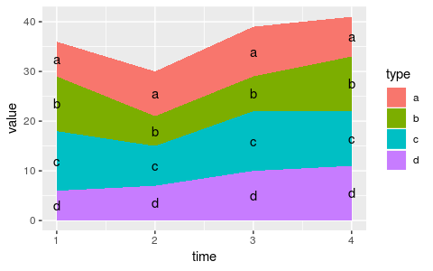